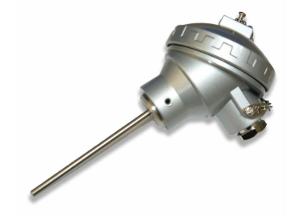
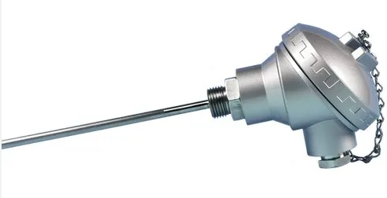
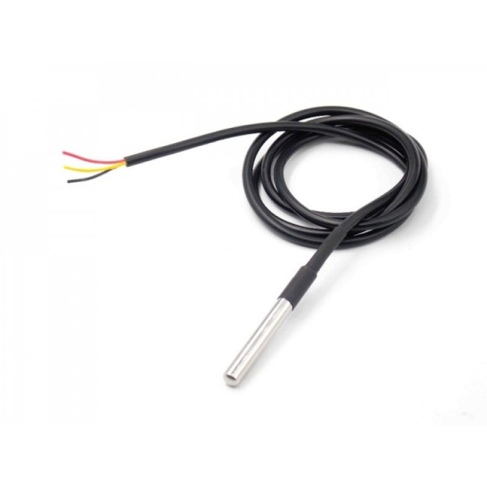
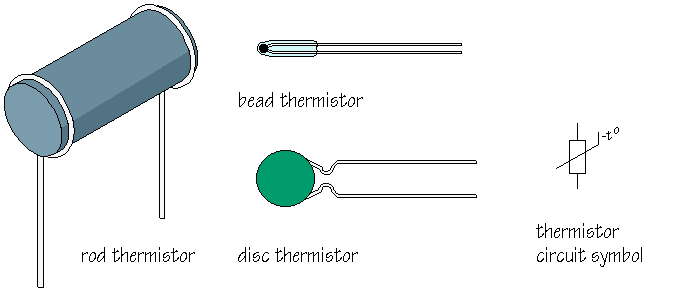

Temperature Sensors and Temperature Transmitter
A temperature sensor is a device that measures the temperature of a medium (like air, water, or a solid object) and converts it into an electrical signal that can be read or processed.
Working Principle
- Most temperature sensors work by detecting changes in physical properties (like resistance, voltage, or current) caused by temperature changes.
- The sensor’s output can be analog (like voltage or resistance change) or digital (like a direct temperature reading in °C).
- RTD (Resistance Temperature Detector):
An RTD (Resistance Temperature Detector) is a sensor whose resistance changes as its
temperature changes. The resistance increases as the temperature of the sensor increases.
The resistance vs temperature relationship is well known and is repeatable over time. An RTD
is a passive device. It does not produce an output on its own. External electronic devices
are used to measure the resistance of the sensor by passing a small electrical current
through the sensor to generate a voltage.

Internal Structure


Principle of Operation: Resistance Temperature Detectors (RTD) operates on the principle that the electrical resistance of a metal changes predictably in an essentially linear and repeatable manner with changes in temperature. RTD have a positive temperature coefficient (resistance increases with temperature). The resistance of the element at a base temperature is proportional to the length of the element and the inverse of the cross sectional area.
A typical electrical circuit designed to measure temperature with RTDs actually measures a change in resistance of the RTD, which is then used to calculate a change in temperature. The resistance of an RTD increases with increasing temperature, just as the resistance of a strain gage increases with increasing strain.
- Thermocouple:
A thermocouple is made up of two dissimilar metals, joined together at one end, that produce
a voltage (expressed in millivolts) with a change in temperature. The junction of the two
metals, called the sensing junction, is connected to extension wires. Any two dissimilar
metals may be used to make a thermocouple.

Principle of Operation:
- When two dissimilar metals are connected together, a small voltage called a thermo-junction voltage is generated at the junction. This is called the Peltier effect.
- If the temperature of the junction changes, it causes voltage to change too, which can be measured by the input circuits of an electronic controller. The output is a voltage proportional to the temperature difference between the junction and the free ends. This is called the Thompson effect.
- Both of these effects can be combined to measure temperature. By holding one junction at a known temperature (reference junction) and measuring the voltage, the temperature at the sensing junction can be deduced. The voltage generated is directly proportional to the temperature difference. The combined effect is known as the thermo-junction effect or the Seebeck effect.

The voltage is measured to infer the temperature. In practical operation, wires A and B are connected to a digital voltmeter (DVM), digital multimeter (DMM), digital data acquisition system, or some other voltage measuring device. If the measuring device has very high input impedance, the voltage produced by the thermo-junction can be measured accurately.
How to Measure Temperature with a Thermocouple?
Though the theory and the working of a thermocouple look very simple, it's not easy to convert voltage generated by a thermocouple to a precise temperature reading, because the voltage signal is small. The voltage and temperature reading is non-linear, other than that you need different compensations and conditioning circuits to reduce the environment and radio noise picked up by the long wire of the thermocouple. With this little description, you can understand the difficulty of measuring temperature with a thermocouple.

Characteristics of Thermocouple

- Thermistor:
A thermistor is a resistance thermometer, or a resistor whose resistance is dependent on temperature. The term is a combination of “thermal” and “resistor”. It is made of metallic oxides, pressed into a bead, disk, or cylindrical shape and then encapsulated with an impermeable material such as epoxy or glass.

There are two types of thermistors: Negative Temperature Coefficient (NTC) and Positive Temperature Coefficient (PTC). With an NTC thermistor, when the temperature increases, resistance decreases. Conversely, when temperature decreases, resistance increases. This type of thermistor is used the most.A PTC thermistor works a little differently. When temperature increases, the resistance increases, and when temperature decreases, resistance decreases. This type of thermistor is generally used as a fuse.

Typically, a thermistor achieves high precision within a limited temperature range of about 50ºC around the target temperature. This range is dependent on the base resistance.Working Principle of Thermistors
The thermistor works on the simple principle of change in resistance due to a change in temperature. When the ambient temperature changes the thermistor starts self-heating its elements. its resistance value is changed with respect to this change in temperature. This change depends on the type of thermistor used. The resistance temperature characteristics of different types of thermistors are given in the following section.
A thermistor is similar to an RTD, but a semiconductor material is used instead of a metal. A thermistor is a solid state device and has larger sensitivity than does an RTD. Unlike RTD’s, the temperature-resistance characteristic of a thermistor is non-linear, and cannot be characterized by a single coefficient. Furthermore, unlike RTDs, the resistance of a thermistor decreases with increasing temperature.Characteristics of Thermistor


- Temperature Transmitter :
A Temperature Transmitter is a device that converts the signal produced by a temperature
sensor into a standard instrumentation signal representing a process variable temperature
being measured and controlled.
The most common transmitter instrumentation output signal is 4 to 20 mA.
The signal from the Temperature Transmitter is sent to a Controller that determines what action is required and generates an appropriate output signal. Controllers are either a PLC or a DCS in process control today.
Working Principle
- The temperature sensor senses the process temperature.
- The sensor’s electrical property changes:
- RTD: resistance changes with temperature
- Thermocouple: generates a small voltage due to temperature difference
- The transmitter:
- Amplifies the weak signal
- Linearizes it
- Compensates for errors
- The final signal is converted into a standard output, typically:
- 4 mA = minimum temperature
- 20 mA = maximum temperature
- This signal is sent to a control or monitoring system.

A two wire temperature transmitter accept a thermocouple or RTD input and convert temperature output into 4-20mA current signal. The Transmitter usually requires a 24VDC supply which is connected in series with two wire interface or provided by the host instruments. The amplified temperature signal can be transmitted via long cable run if required.